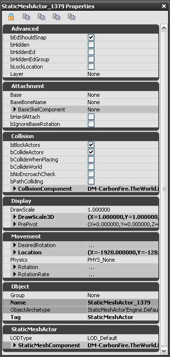

UDN
Search public documentation:
RemoteControlCH
English Translation
日本語訳
한국어
Interested in the Unreal Engine?
Visit the Unreal Technology site.
Looking for jobs and company info?
Check out the Epic games site.
Questions about support via UDN?
Contact the UDN Staff
日本語訳
한국어
Interested in the Unreal Engine?
Visit the Unreal Technology site.
Looking for jobs and company info?
Check out the Epic games site.
Questions about support via UDN?
Contact the UDN Staff
远程控制功能
文档概要：解释了远程控制功能。 文档变更记录：由Richard Nalezynski创建。概述
Remote Control(远程控制)是一个新的功能，它用于操作渲染选项、查看Actors，以及查看实时统计数据。远程控制
在2007年8月之前的QA验证版本中，在非编辑器播放会话期间将会默认地启用Remote Control(远程控制)功能。editactor 支持，但您可以通过在命令行输入 -remotecontrol 或 -wxwindows 来得到原有功能。
渲染页面
Rendering Page(渲染页面)包含了一系列可以切换或设置的各种设置及统计数据。 在工具条上的按钮用于打开一个关卡。
设置
- Game Resolution - 从一组标准或全屏模式的集合中进行选择，或创建一个自定义的分辨率
- Maximum Texture Size - 选择32x32 到4096x4096之间的值
- Maximum Texture Size - 选择32x32到512x512之间的值
- Enable Post Process Effects - 选择True或False
- View Mode - 从 Wireframe（线框） 、 BrushWireframe（画刷线框） 、 Unlit（不带光照模式） 、 Lit（带光照模式） 、 LightingOnly（纯光照模式） 、 LightComplexity（光照复杂度） 、 ShaderComplexity（着色器复杂度） 中进行选择
- Slomo - 设置一个值（1.0是正常值）
- FOV - 设置一个值（一般为90.0）
- Showflags - 选择以下东西的切换开关： Bones（骨骼） 、 Bounds（边界） 、 BSP 、 Collision（碰撞） 、 Constraints（约束） 、 Decals（贴花） 、 Decal Info（贴花信息） 、 Fog（雾） 、 Foliage（植被） 、 Hit Proxies（点击代理） 、 Level Coloration（关卡着色） 、 Mesh Edges（网格物体边缘） 、 Missing Collision（丢失的碰撞） 、 Particles（粒子） 、 Vertex Colors（顶点颜色） 、 Scene Capture Portals（场景捕获入口） 、 Shadow Frustums（阴影椎体） 、 Skeletal Meshes（骨架网格物体） 、 Skins（皮肤） 、 Sprites（平面粒子） 、 Static Meshes（静态网格物体） 、 Terrain（地形） 、 Terrain Patches（地形粒子） 、 Constraints（约束）
- Dynamic Shadows - 切换打开关闭状态
- Show HUD - 切换是否描画HUD的状态(这和UnrealUI的场景是不同的)
- Players Only - 切换打开关闭状态
统计数据
- Frames Per Second - 切换打开或关闭状态
- D3D Scene - 现在已经不使用
- Memory - 切换打开或关闭状态
Actors 页面
Actors页面包含了当前关卡中的所有actors的树状列表，以及过滤列表的控制功能。 在工具条上的图标用于切换动态Actors的现实状况；刷新Actor列表；显示选中的Actor的属性；显示具有调试选项的子对象；自动展开Actor树；以及显示十字叉下的Actors的属性。

当显示Actor的属性时，您可以选择锁定选中的Actor；复制属性刀剪切板；完全地复制属性刀剪切板(包括editinline[正在编辑的]物体)；以及展开和合并所有类别。统计数据页面
统计数据页面包含了成组的统计信息的树状列表，您可以单独地切换这些统计信息也可以成组地进行切换。
组
- Physics - 动态、事件等。
- Streaming - 游戏和渲染线程、音频、加载时间等。
- Engine - 植被、地形、decals (贴花)、输入、引擎等。
- FaceFX - 顶点变形、材质、骨骼混合等。
- Game - 组件、脚本、Kismet以及垃圾回收等。
- UI - 页面、窗体控件等。
- Audio - 组件、实例等。
- Anim - 更新、混合等。
- Particles - 平面粒子、网格物体等。
- BeamParticles - spawn、渲染等。
- TrailParticles - spawn、渲染等。
- SceneUpdate - 图元、光源等。
- Net - 数据包、批数据、静态对象引用、名称引用等。
- CharacterLighting - 可见性、环境等。
- RHI - 三角形、线、图元
- Octree - 点和半径检测；时间及数量
- SceneRendering - 阻挡、阴影、光源等。
- Collision - 关卡、地形、BSP、静态网格物体、Actors；单线及多线检测
- DefaultStatGroup - 根
- StatSystem - 每帧的捕获物
- Object - 属性、配置、本地化、名称表格等。
- Memory - 虚拟内存、纹理内存等。
- Threading - 渲染线程和游戏线程
- AsyncIO - 读取数量和大小（完成的、取消的、未完成的）
控制台命令
用于切换Remote Control(远程控制)，在控制台侧输入REMOTECONTROL 或 RC 。
-remotecontrol 或 -wxwindows 来运行游戏时才可用。 当从Play In Editor会话运行时，这些命令将总是可用。
为了在从命令行中调用游戏可执行函数时禁止远程控制，那么请指定 -norc 或 -noremotecontrol 。